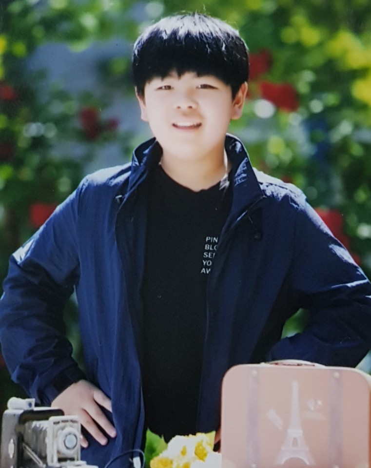

This HTML webpage is writtenby Online HTML editor (https://html-online.com/editor/)
* Summary
|  |
|
* Introduction
Hello. Welcome to my homepage. My name is Lim Hyunjoon.
I am studying at Maehyun Middle School.
I live in Suwon, South Korea. My future hope is to be a good software developer.
And I have two cats at home.
* My hobby:
Also, my hobby is mine craft games and reading books.
This year, I shall improve my English communication skill.
I like taking photos of my cat with a smartphone.
My favorite tourist attraction in Fukuoka in Japan.
* School:
* My Portfolio:
1. 2017, CODEGATE 2017 KIDSSCHOOL 참가, 보안세미나와 무인 자동차 코딩 경진대회 수료
2. 2018, 제 16회 임베디드 소프트웨어 경진대회, "전통시장 활성화 부문, 신토불이", 주니어 임베디드SW 메이커 부문 우수상 (광운대학교 총장상) 수상, http://eswcontest.or.kr/bbs/board.php?tbl=award&category=2018%EB%85%84
3. 2019, 임베디드 개발도서 출판, “라즈베리파이로 시작하는 핸드메이드 IoT” 출판을 위한 기능 재현 및 검수 참여, BJ 출판사
4. 2019, KCC Conference, "롱폴링 및 타이머 기반의 IOT 시스템의 최적화", 주니어 논문 공동 저자, http://www.riss.kr/link?id=A106329057
5. 2020, 4차 산업혁명 영재 장학생 선발 (중학생 부문), 한국언론인협회 및 국회 4차산업혁명포럼, https://www.donga.com/news/Economy/article/all/20200914/102932948/1
6. 2020, 코드페어 착한상상공모전, 골든타임 (홀몸노인 케어 시스템), 결승전 진출
7. 2020, 삼성전자 주니어 소프트웨어 창작 대회, 홍익인간 (사회적 거리두기 플러스), 결승전 진출
8. 2020, 매탄중학교 학생과학발명품 경진대회, 장려상(3위)
* Open Source Activity:
* My Public Google Calendar:
* Youtube Video:
The end of the line.